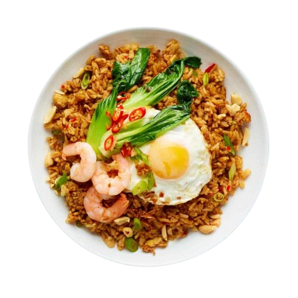

Flowbite
Open main menu
Home
About
Services
Pricing
Contact
Pedasnya Nendang, Bikin Nagih! Cobain Seblak Spesial Kami, Dijamin Lidah Bergetar!
Detail

Mie kwetiau spesial
Read more
Mie kwetiau spesial
Read more